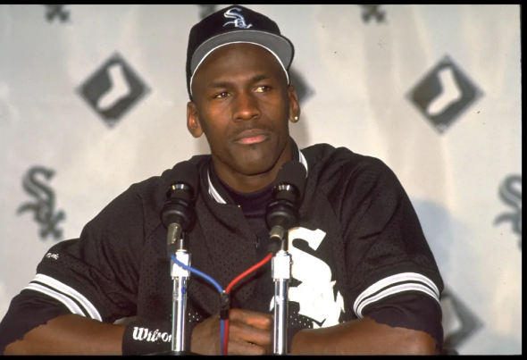

Michael Jordan (1963) é um ex-jogador de basquetebol norte-americano que atuava como meio armador. É considerado um dos maiores jogadores de todos os tempos.
Michael Jeffey Jordan nasceu no Brooklin, Nova Iorque, no dia 17 de fevereiro de 1963. Ainda na infância, mudou-se com a família para Wilmington, na Carolina do Norte. Cursou o colegial na Emsley A. Laney, onde teve sua primeira experiência no basquete.
Michael Jordan foi casado com Juanita Vanoy entre 1989 e 2006 e com ela teve três filhos: Jeffrey, Marcus e Jasmine. O casal separou-se de forma amigável e Juanita recebeu 188 milhões de dólares.
No dia 27 de abril de 2013, Jordan casou-se com a modelo Yvette Prieto. No dia 11 de fevereiro de 2014 nasceram as gêmeas Victoria e Ysabel.

BIOGRAFIA
CARREIRA
Formado na Universidade da Carolina do Norte, Jordan foi "draftado" para o Chicago Bulls em 1984. Desde o início da carreira, se destacou pela equipe e manteve números altos de pontos, sendo eleito "Rookie of The Year", em 1985, com aproveitamento de 28,2 pontos por partida. Michael Jordan estabeleceu um legado no basquete. Em seis decisões, não perdeu nenhuma vez e se sagrou MVP das Finais todas as vezes. Mas não era só nos momentos decisivos que aparecia: o camisa 23 foi eleito o jogador mais valioso da temporada regular em cinco oportunidades.

ESTATÍSTICAS
Michael é o jogador que mais acumulou troféus durante toda a sua carreira no basquete. Em suas 15 temporadas na NBA, o astro conquistou um total de 22 títulos: seis campeonatos da NBA, seis MVPs das Finais, cinco MVPs da temporada regular, três MVPs do All-Star Game, um prêmio de Melhor Defensor da NBA e o prêmio de Rookie (estreante) do ano. 6x MVP das Finais O Chicago Bulls dominou a NBA na década de 90. Nos seis títulos da franquia (1991, 1992, 1993, 1996, 1997 e 1998), Jordan foi eleito o MVP das Finais. Até agora, ele é o único que conseguiu levar essa quantia para casa. No ranking, o astro é seguido por LeBron James, com quatro, Tim Duncan e Shaquille O'Neal, com três cada.